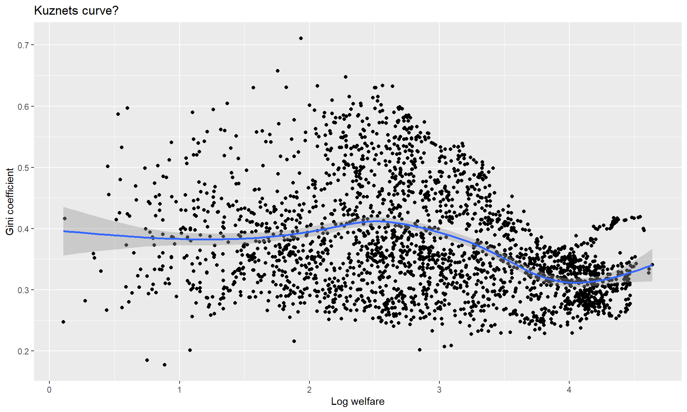
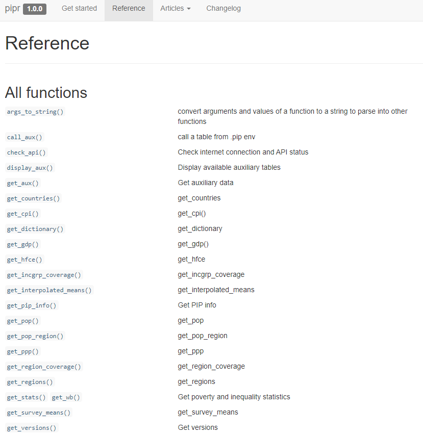
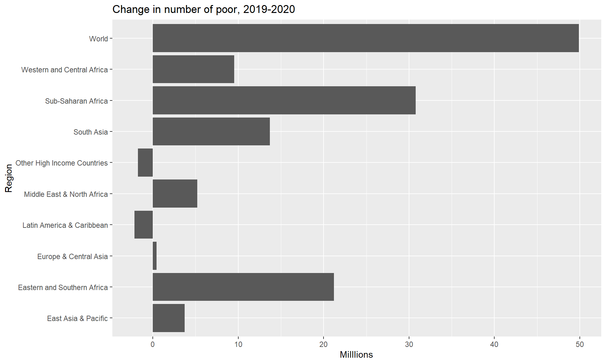
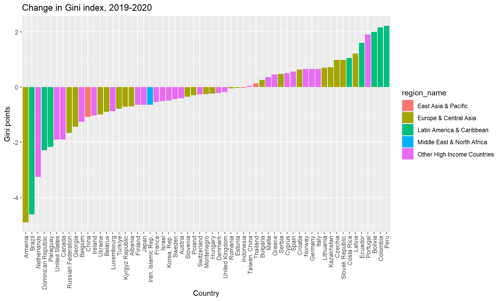

# A tibble: 2,504 × 44
region_name region_code country_name country_code year reporting_level
<chr> <chr> <chr> <chr> <dbl> <chr>
1 Sub-Saharan Afri… SSA Angola AGO 2000 national
2 Sub-Saharan Afri… SSA Angola AGO 2008 national
3 Sub-Saharan Afri… SSA Angola AGO 2018 national
4 Europe & Central… ECA Albania ALB 1996 national
5 Europe & Central… ECA Albania ALB 2002 national
6 Europe & Central… ECA Albania ALB 2005 national
7 Europe & Central… ECA Albania ALB 2008 national
8 Europe & Central… ECA Albania ALB 2012 national
9 Europe & Central… ECA Albania ALB 2014 national
10 Europe & Central… ECA Albania ALB 2015 national
# ℹ 2,494 more rows
# ℹ 38 more variables: survey_acronym <chr>, survey_coverage <chr>,
# welfare_time <dbl>, welfare_type <chr>, survey_comparability <dbl>,
# comparable_spell <chr>, poverty_line <dbl>, headcount <dbl>,
# poverty_gap <dbl>, poverty_severity <dbl>, watts <dbl>, mean <dbl>,
# median <dbl>, mld <dbl>, gini <dbl>, polarization <dbl>, decile1 <dbl>,
# decile2 <dbl>, decile3 <dbl>, decile4 <dbl>, decile5 <dbl>, …Poverty and Inequality Platform (PIP): an introduction using R
Diana C. Garcia Rojas
Zander Prinsloo
Anubhava Singla
Rossana Tatulli
Nishant Yonzan
2025-07-09
Outline of the presentation
The findings, interpretations, and conclusions expressed in this presentation are entirely those of the author. They do not necessarily represent the views of the World Bank and its affiliated organizations, or those of the Executive Directors of the World Banks or the governments they represent.
The authors gratefully acknowledge financial support from the UK government through the Data and Evidence for Tackling Extreme Poverty (DEEP) Research Programme.
Outline
Introduction to the Poverty and Inequality Platform (PIP)
PIP user interface
Accessing the PIP API with R
Exercises
Additional resource
1. Introduction to the Poverty and Inequality Platform (PIP)
Poverty data at the World Bank
The World Bank mission is to end extreme poverty and boost shared poverty on a livable planet.
To that end, the World Bank often helps countries field household surveys to track welfare.
Some countries do not receive assistance yet the Bank is granted access to the data through collaborations with the National Statistical Office.
For high-income countries, poverty data is sourced from the Luxembourg Income Study or EU-SILC.
The Poverty and Inequality Platform (PIP)
PIP is the source of poverty and inequality data for the World Bank.
PIP is the source of data for several targets of the Sustainable Development Goals on ending poverty (SDG1) and reducing inequality (SDG10).
Collaboration between different parts of the World Bank through the Global Poverty Working Group
- Development Data Group
- Development Research Group
- Poverty and Equity Global Practice
PIP motivation
Scope: PIP is the World Bank’s data portal for poverty, prosperity, and inequality estimates.
Accessibility: PIP data is available through Application Programming Interface (API)
- User Interface (UI) – for quick data access and visualizations
- Stata and R wrappers – for advanced users, researchers, students
- Microdata access (for some surveys) through Microdata Online.
Open data, open code, reproducible research:
- PIP code is publicly available, and the PIP Methodology Handbook provides details on the poverty, prosperity, and inequality estimates reported in PIP.
- PIP typically is updated twice a year - Spring/Fall. One can, however, access various vintages of the data.
PIP: Quality, accessibility, and transparency
- All code necessary to create the poverty estimates are publicly available (https://github.com/PIP-Technical-Team)

PIP: Quality, accessibility, and transparency
- A description of the entire methodology is available in a technical handbook (https://worldbank.github.io/PIP-Methodology/)

Data release notes and other publications
- Publications are available detailing the updates in each release, methodological assumptions, and other technical improvements (https://worldbank.github.io/publication/)

Welfare measure reported in PIP

Welfare measure reported in PIP

Welfare measure reported in PIP

Welfare measure reported in PIP

Welfare measure reported in PIP

Welfare measure reported in PIP

2. Accessing PIP through the user interface
3. Accessing PIP in R
The pipr package
Installation:
# To install the pipr package, you first need to install the devtools package install.packages("devtools") # The devtools package allows you to install pipr through GitHub devtools::install_github("worldbank/pipr") # Now load pipr library(pipr) # I'll use dplyr a lot in these slides, so best to load it as well library(dplyr)More information about the package:
Two main functions
get_stats(): country estimates of poverty and inequality- each row identifies a unique combination of country_code, year, reporting_level, and welfare_type
- reporting_level: Mostly national, but can be urban or rural
- welfare_type: Income or consumption
get_wb(): regional/global estimates of poverty and inequality- each row identifies a unique combination of region_code and year.
Country-level estimates
Variables
[1] "region_name" "region_code" "country_name"
[4] "country_code" "year" "reporting_level"
[7] "survey_acronym" "survey_coverage" "welfare_time"
[10] "welfare_type" "survey_comparability" "comparable_spell"
[13] "poverty_line" "headcount" "poverty_gap"
[16] "poverty_severity" "watts" "mean"
[19] "median" "mld" "gini"
[22] "polarization" "decile1" "decile2"
[25] "decile3" "decile4" "decile5"
[28] "decile6" "decile7" "decile8"
[31] "decile9" "decile10" "cpi"
[34] "ppp" "pop" "gdp"
[37] "hfce" "is_interpolated" "distribution_type"
[40] "estimation_type" "spl" "spr"
[43] "pg" "estimate_type" Variable information
# A tibble: 41 × 2
variable definition
<chr> <chr>
1 region_name World Bank region name
2 region_code Three-letter World Bank abbreviation of world regions
3 year Year
4 country_name World Bank country name
5 country_code Three-letter ISO (alpha-3) country code system for internati…
6 reporting_level Reporting level
7 survey_acronym Country survey acronym
8 survey_coverage Geographic coverage of the country survey (i.e. national, ur…
9 welfare_time Welfare time
10 welfare_type Type of welfare vector used for estimates (income or consump…
# ℹ 31 more rowsGhanaian estimates
# A tibble: 7 × 6
country_code year poverty_line headcount mean gini
<chr> <dbl> <dbl> <dbl> <dbl> <dbl>
1 GHA 1987 3 0.7821900 2.326959 0.3534958
2 GHA 1988 3 0.77437 2.389670 0.3599354
3 GHA 1991 3 0.8036237 2.222009 0.3843171
4 GHA 1998 3 0.6534858 2.958526 0.4007121
5 GHA 2005 3 0.6088694 3.387710 0.4275624
6 GHA 2012 3 0.4176550 4.822603 0.4237164
7 GHA 2016 3 0.3902579 5.068841 0.4350860The default poverty line is $3.00 (per capita, per day, in 2021 PPP-adjusted dollars)
The mean is expressed in the same currency
Different poverty line
# A tibble: 38 × 4
country_code year poverty_line headcount
<chr> <dbl> <dbl> <dbl>
1 LUX 1985 10 0.004744776
2 LUX 1986 10 0.002237166
3 LUX 1987 10 0.002258436
4 LUX 1988 10 0
5 LUX 1989 10 0
6 LUX 1990 10 0
7 LUX 1991 10 0
8 LUX 1992 10 0
9 LUX 1993 10 0
10 LUX 1994 10 0
# ℹ 28 more rowsMultiple poverty lines
povlines <- c(10, 20, 50,100)
purrr::map_dfr(.x = povlines,
.f = get_stats,
country = "LUX",
year = 2022) |>
select(country_code, year, poverty_line, headcount) # A tibble: 4 × 4
country_code year poverty_line headcount
<chr> <dbl> <dbl> <dbl>
1 LUX 2022 10 0.002801136
2 LUX 2022 20 0.01300092
3 LUX 2022 50 0.2030513
4 LUX 2022 100 0.5921018 Estimates across selected countries
get_stats(country = c("LUX","GHA","VNM"), year=2022) |>
select(country_code, year, poverty_line, headcount, mean, gini)# A tibble: 2 × 6
country_code year poverty_line headcount mean gini
<chr> <dbl> <dbl> <dbl> <dbl> <dbl>
1 LUX 2022 3 0.001043733 103.2674 0.3409399
2 VNM 2022 3 0.01603360 16.58664 0.3609300- Note that there is no estimate for Ghana (GHA) in 2022 and hence not reported in the output.
Extrapolation for Ghana from 2016 to most recent year

Interpolated and extrapolated values
get_stats(country = "GHA", fill_gaps = TRUE) |>
filter(year>=2016) |>
select(country_code, year, poverty_line, headcount)# A tibble: 10 × 4
country_code year poverty_line headcount
<chr> <dbl> <dbl> <dbl>
1 GHA 2016 3 0.4045640
2 GHA 2017 3 0.3851886
3 GHA 2018 3 0.3752956
4 GHA 2019 3 0.3593040
5 GHA 2020 3 0.3655441
6 GHA 2021 3 0.3553633
7 GHA 2022 3 0.3482590
8 GHA 2023 3 0.3452387
9 GHA 2024 3 0.3439846
10 GHA 2025 3 0.3360096Poverty by welfare type
Poverty by reporting level
Within-country comparability
df <- get_stats(country="CHN") |>
filter(reporting_level=="national" & year>=1990) |>
select(year,headcount,comparable_spell,welfare_type)
print(df, n = 21)# A tibble: 19 × 4
year headcount comparable_spell welfare_type
<dbl> <dbl> <chr> <chr>
1 1990 0.8303196 1990 - 2012 consumption
2 1993 0.7675762 1990 - 2012 consumption
3 1996 0.6200222 1990 - 2012 consumption
4 1999 0.5843151 1990 - 2012 consumption
5 2002 0.4814554 1990 - 2012 consumption
6 2005 0.3309843 1990 - 2012 consumption
7 2008 0.2624233 1990 - 2012 consumption
8 2010 0.2058664 1990 - 2012 consumption
9 2011 0.1569681 1990 - 2012 consumption
10 2012 0.1324195 1990 - 2012 consumption
11 2013 0.06225640 2013 - 2021 consumption
12 2014 0.04744519 2013 - 2021 consumption
13 2015 0.0297972 2013 - 2021 consumption
14 2016 0.02198244 2013 - 2021 consumption
15 2017 0.01665204 2013 - 2021 consumption
16 2018 0.007953106 2013 - 2021 consumption
17 2019 0 2013 - 2021 consumption
18 2020 0 2013 - 2021 consumption
19 2021 0 2013 - 2021 consumption Data from LIS
df <- get_stats() |>
filter(grepl("LIS", survey_acronym)) |>
group_by(country_name) |>
summarize(obs = n()) |>
ungroup()
print(df, n=29)# A tibble: 29 × 2
country_name obs
<chr> <int>
1 Australia 12
2 Austria 7
3 Belgium 6
4 Canada 44
5 Czechia 3
6 Denmark 4
7 Finland 4
8 France 12
9 Germany 30
10 Greece 2
11 Hungary 3
12 Ireland 6
13 Israel 25
14 Italy 17
15 Japan 13
16 Korea, Rep. 11
17 Luxembourg 18
18 Netherlands 5
19 Norway 5
20 Poland 4
21 Romania 2
22 Slovak Republic 2
23 Slovenia 2
24 Spain 11
25 Sweden 8
26 Switzerland 5
27 Taiwan, China 16
28 United Kingdom 54
29 United States 614. Exercises
Exercise 1
Explore whether Kuznets’ inverse-U hypothesis holds with data in PIP
Plot the relationship between an inequality metric and log mean welfare
Regress an inequality metric on a 2nd order polynomial of log mean welfare
# Kuznets curve?
df <- get_stats()
gr <- ggplot(df, aes(x = log(mean),y=gini)) +
geom_point() +
geom_smooth() +
labs(title = "Kuznets curve?",
y = "Gini coefficient",
x = "Log welfare")
summary(lm(gini~log(mean)+I(log(mean)^2),data=df))
Call:
lm(formula = gini ~ log(mean) + I(log(mean)^2), data = df)
Residuals:
Min 1Q Median 3Q Max
-0.2013324 -0.0528842 -0.0087689 0.0454070 0.3066085
Coefficients:
Estimate Std. Error t value Pr(>|t|)
(Intercept) 0.3239573 0.0115712 27.997 < 0.00000000000000022 ***
log(mean) 0.0791346 0.0087568 9.037 < 0.00000000000000022 ***
I(log(mean)^2) -0.0195452 0.0015606 -12.524 < 0.00000000000000022 ***
---
Signif. codes: 0 '***' 0.001 '**' 0.01 '*' 0.05 '.' 0.1 ' ' 1
Residual standard error: 0.079882 on 2501 degrees of freedom
Multiple R-squared: 0.15149, Adjusted R-squared: 0.15081
F-statistic: 223.26 on 2 and 2501 DF, p-value: < 0.000000000000000222
Global and regional estimates
# A tibble: 450 × 14
region_name region_code year poverty_line headcount poverty_gap
<chr> <chr> <dbl> <dbl> <dbl> <dbl>
1 Eastern and Southern Af… AFE 1981 3 0.5818767 0.2687279
2 Eastern and Southern Af… AFE 1982 3 0.5855789 0.2726082
3 Eastern and Southern Af… AFE 1983 3 0.5917143 0.2779007
4 Eastern and Southern Af… AFE 1984 3 0.6010141 0.2840959
5 Eastern and Southern Af… AFE 1985 3 0.6086635 0.2895107
6 Eastern and Southern Af… AFE 1986 3 0.6035845 0.2856189
7 Eastern and Southern Af… AFE 1987 3 0.5973070 0.2814237
8 Eastern and Southern Af… AFE 1988 3 0.5964351 0.2799636
9 Eastern and Southern Af… AFE 1989 3 0.5969201 0.2809244
10 Eastern and Southern Af… AFE 1990 3 0.6048452 0.2870300
# ℹ 440 more rows
# ℹ 8 more variables: poverty_severity <dbl>, watts <dbl>, mean <dbl>,
# spr <dbl>, pg <dbl>, estimate_type <chr>, pop <dbl>, pop_in_poverty <dbl>Global poverty, 1990-2022
Many more functions

Exercise 2
COVID-19 impact on poverty and inequality
Calculate and plot the change in millions of extreme poor by region from 2019 to 2020
(Difficult) Calculate and plot the changes in Gini observed from 2019 to 2020 for countries with comparable data during these two years
# Change in number of poor, 2019-2020
df <- get_wb() |> filter(year==2019 | year==2020) |>
group_by(region_code) |>
mutate(changeinpoor = pop_in_poverty-lag(pop_in_poverty)) |>
filter(!is.na(changeinpoor))
gr <- ggplot(df, aes(y = region_name,x=changeinpoor/10^6)) +
geom_bar(stat="identity") +
labs(title = "Change in number of poor, 2019-2020",x = "Milllions",y = "Region") 
# Change in Gini, 2019-2020?=
df <- get_stats() |>
filter(year==2019 | year==2020) |>
filter(reporting_level=="national") |>
group_by(country_code,welfare_type,comparable_spell) |>
# Only keeps countries with comparable estimates in 2019 and 2020
filter(n()==2) |>
mutate(ginichange = gini-lag(gini)) |>
filter(year==2020) |>
ungroup() |>
# If countries have both income and consumption estimates, use only the latter
group_by(country_code) |>
filter(n()==1 | welfare_type=="consumption") |>
ungroup()
gr <- ggplot(df[df$country_code!="XKX",], aes(x = reorder(country_name, +ginichange),y=ginichange*100,fill=region_name)) +
geom_bar(stat="identity") +
labs(title = "Change in Gini index, 2019-2020",y = "Gini points",x = "Country") +
theme(axis.text.x = element_text(angle = 90, vjust = 0.5, hjust=1))
Additional resource
Methodological handbook: Describes all methodological details behind the estimates
Poverty & Inequality Briefs: 2-page summary of poverty and inequality in almost every developing country
Survey percentiles: 100 percentiles of each country-year survey distribution
Lined-up percentiles distribution: 1000 points on the global distribution
Thank you for listening.
For further details please contact:
- Diana C. Garcia Rojas drojas@worldbank.org
- Zander Prinsloo: zprinsloo@worldbank.org
- Rossana Tatulli: rtatulli@worldbank.org
- Anubhava Singla: asingla1@worldbabnk.org
- Nishant Yonzan: nyonzan@worldbank.org